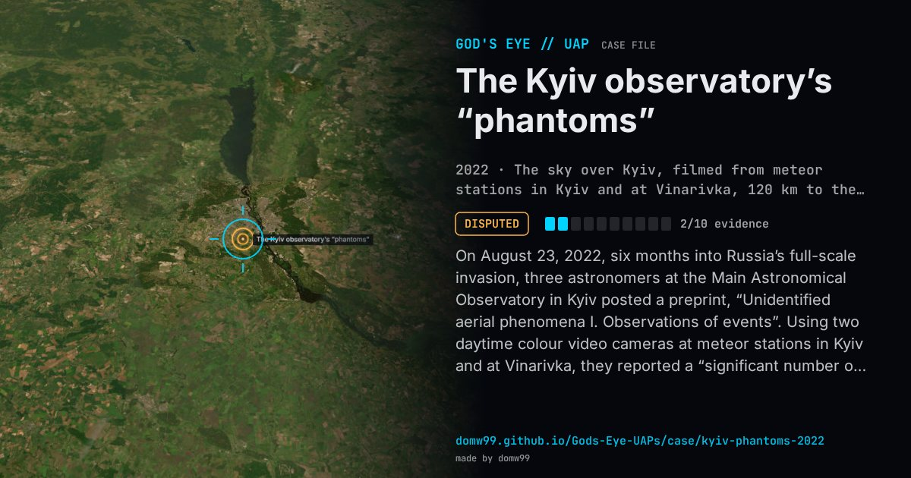

The Kyiv observatory’s “phantoms”

On August 23, 2022, six months into Russia’s full-scale invasion, three astronomers at the Main Astronomical Observatory in Kyiv posted a preprint, “Unidentified aerial phenomena I. Observations of events”. Using two daytime colour video cameras at meteor stations in Kyiv and at Vinarivka, they reported a “significant number of objects whose nature is not clear”: luminous “cosmics” and dark “phantoms” that they estimated at 3 to 12 metres across, up to 10–12 km away and moving at up to 15 km/s, some flashing at 10–20 Hz. The claims spread around the world. The paper gives no dates for the observations; this entry is placed at the date of the preprint. Further preprints followed in November 2022 and June 2023.
Explanation
The Main Astronomical Observatory of the National Academy of Sciences of Ukraine reviewed the paper and found the observations original but the analysis badly flawed: the distances, on which the sizes and speeds depend, were seriously wrong; the paper gave no dates and did not show which events were seen from both stations; and it did not consider satellites, drones, birds or the shells and missiles of the war. The observatory asked that the work be presented as the authors’ own study. Avi Loeb argued the objects were probably about ten times closer than claimed, which makes them small, nearby things.
What was seen
Shape: Dark “phantoms” and bright “cosmics” crossing the daytime sky, singly and in groups
Witnesses: Boris Zhilyaev and colleagues at the Main Astronomical Observatory, Kyiv
Duration: Fractions of a second each, on video
Sources
- Zhilyaev, Petukhov and Reshetnyk — Unidentified aerial phenomena I. Observations of events (arXiv:2208.11215)
- The Debrief — Controversial Ukrainian UAP study shot down in statement by scientific council
- Space.com — There aren’t actually UFOs over Ukraine, experts say